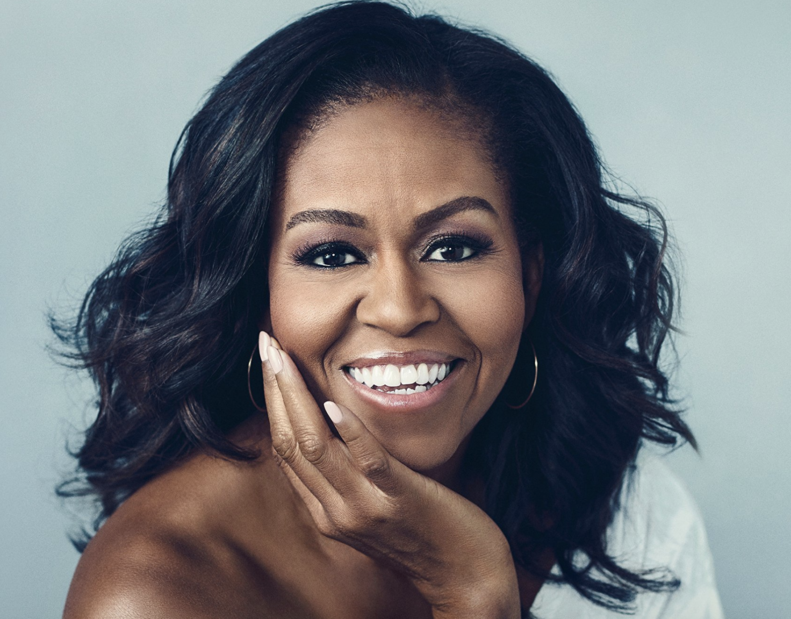
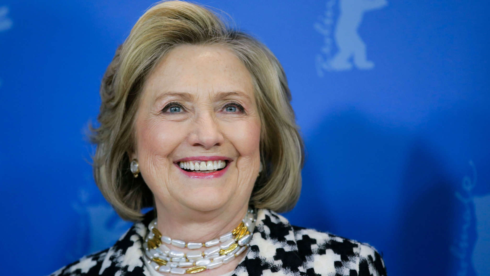

Malala became a global icon for the importance of educating girls.She was awarded with the nobel prize at the age of 17 in 2004.She is the founder of the Malala Fund, which advocates for international, national and local level policy and system changes that give girls access to a high quality education. Malala fought for education rights.
Michelle Obama

Michelle Obama has led "Let Girl's learn" This is a U.S initiative to support community.It focused on girs education across the globe.This project will draw on 7,000 peace Corps volunteers to support hundreds of new community projects that help girls go to school and stay in school.Obama took it upon herself to not only become a voice for the increase in education of girls around the world, but worked nationally to empower them to become leaders and grow into their full potential.
Hillary Rodham Clinton

Hillary Clinton launched Collaborative for Harnessing Ambition and Resources for Girls Education. This program lead $600 million to enable 14 million girls around the globe to go to school. Also, as Secretary of State, Mrs. Clinton established the State Department’s Office of Global Women’s Issues, whose mandate included increasing out-of-school girls’ access to primary education.
Marian Wright Edelman
Marian Wright Edelman started off as civil rights activist.She founded the Children's Defense Fund. he was integral in creating a strong and effective voice for all children who cannot vote, lobby, or speak for themselves. While she advocated for all children, she also paid particular attention to children of color, those with disabilities, or those who came from under resourced communities.